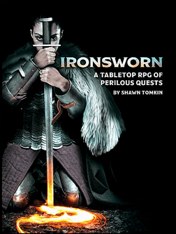

Solo Games
Solo Games exist on a spectrum. Shawn Tomkin wrote a Bluesky thread back in January 2025 that tries to categorise some of these solo experiences. It's 80% aligned with my own views, so I'll be using that as the basis for categorising the various games as they appear on this page. Note - this is a very subjective grouping and plenty of games straddle the line between categories.
- Story games - In many ways more of a prompted creative writing exercise than a game. No mechanics, but generally features a gameplay loop that drives the story forward.
- Journaling Games - prompt driven, light mechanics, intended to be a reflective and immersive experience. Usually leave a lot of the heavy lifting to the players's imagination but could in theory be played without journalling, even if the experience would be rather empty.
- Solo-centric RPGs - robust games with mechanical depth, designed to be played without a GM. Often feature oracle and prompt tables to add some of the randomised story-driven elements that would usually come from a GM figure.
- Solo-friendly RPGs - traditional RPGs with an expanded ruleset that facilitates solo play.
- Solo drawing games - games that are based around drawing or sketching rather than written or spoken format story telling.
- Dungeon delvers - robust engines for generating a dungeon, narrower in scope than the solo-centric RPG but more mechanical than a journaling game.

Ironsworn
- Tomkin Press
Solo-centric RPG
Ironsworn is the solo game that started me on this journey. It's free to download and very high production quality. There are some paid supplements and physical versions of the various game books and assets that you can buy if you want, but you absolutely don't need them to start playing. If you're looking for a true solo game that is close to the normal TTRPG adventure experience this is the one I'd recommend. The Ironsworn family of games also includes Starforged (Ironsworn in space) and Sundered Isles (Steampunk Pirate Ironsworn).
One of my favourite features of Ironsworn is the world-building exercise that is built into the setup of the game. You are given a template world, an empty Ironlands, and you answer a series of questions to determine your 'world truths'. There are multiple-choice answers that will help you get started as a newbie, but plenty of opportunity to enhance or just completely invent your own answers to those questions once you have a little more experience.
Resources
- The official Ironsworn website
- Me, Myself and Die - Season 2: a Youtube Ironsworn Actual Play by Trevor Devall
- The Bad Spot: A Youtube actual play channel/podcast that heavily features Ironsworn content